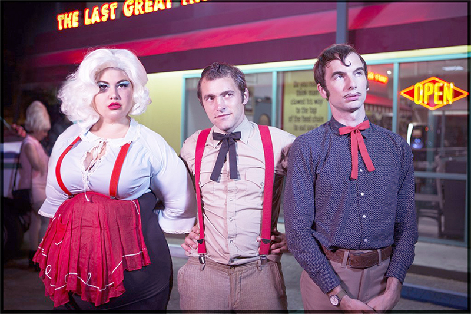

 Shannon and the Clams are an indie garage punk quartet band from Oakland, CA. Known for a vintage sound that incorporates elements of doo-wop, classic R&B, garage psych, and surf. Shannon and the Clams has drawn comparisons to both Buddy Holly and 1960s girl groups. They have developed a notoriety for lively genuine stage performances and a zealous following that craves their particular authenticity and innovation on classic sounds. They love "music from '50s oldies to '80s punk" The band includes vocals from bassist Shannon Shaw, guitarist Cody Blanchard, and keyboardist Will Sprott, along with drums by Nate Mahan. Shaw and Blanchard met at the California College of the Arts, where they began performing together. They didn’t get along at first but after watching a video project he’d made, Shaw decided she’d found a kindred spirit and they struck up a friendship. In their most recent album release, Onion, they collaborated with musician & producer Dan Aurbach and his label Easy Eye Sound. In January 2017 the band flew together to Nashville and over the course of ten days they fleshed out their songs with Auerbach in his Easy Eye Studio where he helped refine and embellish their songs to help steer the album. Dan Aurbach also helped with Shannon Shaw’s Debut Solo album in 2018, a country-accented set titled Shannon in Nashville. The solo album teamed Shaw with a studio band that included veteran session men Gene Chrisman and Bobby Wood. Shaw added country and pop accents to her retro garage sound. Shaw is also a member of queer-core punk outfit Hunx and His Punx.